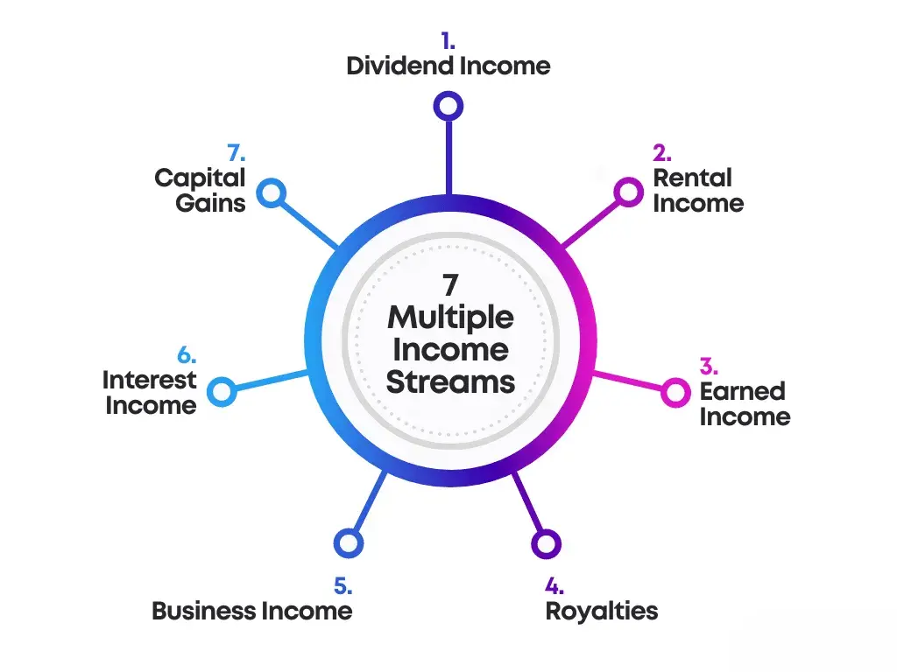

The timeline for achieving financial freedom varies for each individual and depends on factors such as income, expenses, and savings rate. It requires consistent effort and discipline over a significant period, typically years or even decades.
The Roadmap to Financial Freedom: Strategies That Actually Work

Mr.Yashpal Chavada
12/05/2023
Financial freedom, a cherished aspiration for many, can seem distant and unattainable. However, by adopting the right strategies and cultivating the appropriate mindset, you can embark on a transformative journey towards financial independence. In this article, we will unveil a roadmap to help you navigate the path to financial freedom. With clear objectives, disciplined saving and investing habits, and the creation of passive income streams, you can take control of your finances and shape a prosperous future.
Introduction
Financial freedom allows you to live life on your own terms, free from the constraints of money. It entails having sufficient wealth and passive income to cover your expenses and enjoy the lifestyle you desire. In this article, we will delve into the key strategies that will set you on the path to financial freedom.Before embarking on your journey to financial freedom, it's essential to understand what it means to you. Financial freedom is the ability to live life on your terms without being limited by money. It involves having enough wealth and passive income to cover your expenses and enjoy the lifestyle you desire. Now, let's explore the key strategies that will set you on the path to financial freedom.
Setting Clear Financial Goals
To start on a successful financial journey, it's essential to establish clear and measurable financial objectives. Achieving financial freedom is a highly personal goal, which could involve early retirement, starting a business or traveling the world. Setting specific and achievable goals helps track progress and maintain motivation. By defining the desired outcome, one can create a clear roadmap to follow and make informed decisions regarding financial planning and investment strategies. With a well-defined financial goal, individuals can identify the necessary actions to take, the resources required, and the time frames necessary to achieve their desired level of financial freedom.
( Find your burning business problem's solution here... )
Creating a Budget and Tracking Expenses :-
Creating a budget and meticulously tracking expenses are essential steps towards achieving financial freedom. A budget serves as a powerful tool, allowing individuals to gain insight into their financial habits and make informed decisions about their spending. By setting financial goals and allocating funds accordingly, individuals can ensure that their money is being utilized optimally.
Tracking expenses is equally crucial, as it provides a comprehensive overview of where money is being spent. This practice allows individuals to identify areas where expenditures can be reduced or eliminated, thereby enabling greater savings. Whether it's unnecessary subscriptions, impulse purchases, or excessive dining out, tracking expenses uncovers patterns and highlights potential areas for improvement.
By diligently tracking expenses and adhering to a well-structured budget, individuals can take control of their financial situation. This empowers them to make purposeful choices aligned with their long-term financial goals, such as saving for emergencies, paying off debts, or investing for the future. Ultimately, the combination of budgeting and expense tracking lays a solid foundation for financial freedom, fostering wise money management and sustainable wealth accumulation.
Managing Debt :-

Debt can pose a formidable barrier when striving for financial independence. It is crucial to formulate a strategic approach to effectively manage and diminish your debts. Begin by prioritizing the settlement of high-interest debts, while ensuring minimum payments are made towards other debts. This tactic allows you to minimize the accumulation of interest and expedite the repayment process.
As you successfully eliminate individual debts, a significant advantage emerges: a greater portion of your income becomes available for savings and investments. By allocating more resources towards these financial avenues, you enhance your ability to build wealth and achieve long-term goals.
Developing a debt management plan necessitates discipline and commitment. Regularly review your financial situation, create a budget, and adhere to it rigorously. Seek opportunities to increase your income and reduce expenses to further accelerate debt repayment.
Ultimately, by proactively addressing your debts, you lay the foundation for a more secure and prosperous financial future. Embrace the journey towards debt reduction, and the rewards of financial freedom will undoubtedly follow.
( Find your burning business problem's solution here... )
Building an Emergency Fund :-
An emergency fund is a vital aspect of any financial plan, as it serves as a safety net during unexpected financial hardships. It is recommended to save at least three to six months' worth of living expenses in an easily accessible account, such as a savings or money market account.
The purpose of an emergency fund is to provide financial security and peace of mind as you work towards your financial goals. Without this fund, unexpected expenses, such as a medical emergency or a sudden job loss, can quickly derail your financial progress.
By having an emergency fund, you can cover unforeseen expenses without having to rely on credit cards or loans, which can lead to high interest rates and debt accumulation. Additionally, this fund can help alleviate the stress and anxiety that come with financial uncertainty.
Overall, building an emergency fund is an essential step towards achieving financial freedom and stability. It is a wise investment in your financial future that can provide a sense of security during times of uncertainty.
Saving and Investing :-
Saving and investing are crucial elements in the journey to accumulate wealth and attain financial independence. To begin, it is advisable to automate your savings by setting up regular transfers and earmarking a portion of your monthly income for this purpose. This ensures a consistent savings habit. Concurrently, it is essential to seek out investment opportunities that align with your risk tolerance and long-term financial objectives.
Diversifying your investment portfolio is a prudent strategy to spread risk and enhance potential returns. This involves allocating funds across various asset classes, such as stocks, bonds, real estate, and mutual funds. By doing so, you reduce the impact of any single investment's performance on your overall portfolio.
To make informed investment decisions, consider conducting thorough research, analyzing historical data, and seeking professional advice when necessary. Additionally, stay updated on market trends, economic indicators, and changes in regulations that may impact your investments.
Remember, building wealth takes time and patience. By adopting disciplined saving habits, exploring suitable investment options, and maintaining a diversified portfolio, you can maximize your chances of achieving long-term financial success.
( Find your burning business problem's solution here... )
Diversifying Investment :-
Warren Buffett, a renowned investor, once wisely remarked, "Don't put all your eggs in one basket." This timeless quote carries a valuable lesson in investment strategy: it cautions against the peril of concentrating all savings in a single financial instrument, like a solitary stock. To mitigate risk and enhance potential returns, diversification becomes essential. By allocating investments across various asset classes, such as gold, real estate, and index funds, one can safeguard their portfolio against the uncertainties of any particular market or industry.
Including gold in an investment portfolio offers a hedge against inflation and serves as a safe haven during economic downturns. Real estate investments provide long-term appreciation potential and the opportunity for rental income. Index funds, on the other hand, offer broad exposure to a diversified basket of stocks, spreading risk across numerous companies and sectors. This diversification strategy aims to balance the ups and downs of different asset classes, reducing vulnerability to the volatility of individual investments.
Buffett's quote serves as a reminder that a well-rounded portfolio, spread across multiple investment options, can foster stability, growth, and resilience in the face of market fluctuations.
Diversifying Income Sources :-
Relying solely on a single income stream can pose limitations on one's financial growth and hinder the path to financial freedom. To expedite this journey, it is prudent to consider diversifying income sources. This strategic approach involves exploring additional avenues such as starting a side business, investing in rental properties, or engaging in passive income opportunities like dividend stocks or peer-to-peer lending.
By establishing a side business, individuals can generate supplementary income while utilizing their skills and expertise. This endeavor can provide a safety net in case of unexpected financial setbacks and also foster personal and professional growth. Investing in rental properties presents an opportunity to earn rental income, build equity, and benefit from potential property value appreciation.
Furthermore, passive income sources like dividend stocks and peer-to-peer lending enable individuals to earn money with minimal effort. Dividend stocks provide regular income through dividends paid by companies, while peer-to-peer lending allows investors to earn interest by lending money to individuals or businesses.
By diversifying income sources, individuals can reduce their reliance on a single income stream and create a more robust financial foundation. However, it is essential to conduct thorough research, seek professional advice, and assess personal risk tolerance before venturing into these avenues.
( Find your burning business problem's solution here... )
Minimizing Expenses :-
Minimizing expenses is a key factor in achieving financial freedom. By carefully analyzing your monthly expenses, you can identify areas where you can cut back without compromising your quality of life. One effective strategy is to reduce discretionary spending. This involves being mindful of non-essential purchases such as dining out, entertainment, or luxury items. By cutting back on these expenses, you can redirect those funds towards more meaningful financial goals.
Another approach is to negotiate bills. Contact your service providers and inquire about potential discounts or promotions. This can apply to various bills like cable, internet, or insurance. Often, companies are willing to offer better rates to retain their customers.
Moreover, seeking cost-efficient alternatives for essential services can also lead to significant savings. Compare prices and consider switching providers for utilities, phone plans, or even grocery shopping. Additionally, embracing energy-saving practices, like reducing electricity usage or using public transportation, can contribute to lower expenses
In summary, by analyzing your monthly expenses, reducing discretionary spending, negotiating bills, and exploring cost-efficient alternatives, you can effectively minimize your expenses without compromising your quality of life, and move closer to achieving financial freedom.
Maximizing Tax Efficiency:-
Optimizing your tax strategy is an essential step towards maximizing your financial resources. By consulting with a tax professional or financial advisor, you can identify valuable tax-saving opportunities that will enable you to retain more of your hard-earned money. These experts possess the knowledge and expertise to navigate the complex world of taxes and can provide you with personalized advice based on your unique financial situation.
One key aspect of an effective tax strategy is identifying deductibles. Deductibles are expenses that can be subtracted from your taxable income, thereby reducing the amount of tax you owe. By understanding which expenses qualify as deductibles, you can significantly lower your tax liability.
Additionally, tax credits can play a crucial role in optimizing your tax situation. Unlike deductibles, which reduce taxable income, tax credits directly reduce the amount of tax you owe. By taking advantage of eligible tax credits, you can further reduce your tax burden and potentially increase your tax refund.
Furthermore, exploring tax-efficient investment accounts can offer long-term benefits. These accounts, such as individual retirement accounts (IRAs) or 401(k)s, provide tax advantages that can enhance your wealth-building journey. Contributions made to these accounts may be tax-deductible, and the growth within the accounts is tax-deferred or tax-free, depending on the type of account.
In conclusion, partnering with a tax professional or financial advisor can help you develop a comprehensive tax strategy tailored to your specific financial goals. By maximizing deductibles, utilizing tax credits, and exploring tax-efficient investment accounts, you can minimize your tax burden and accelerate your wealth-building journey. Take control of your financial future today and start optimizing your tax strategy
( Find your burning business problem's solution here... )
Growing Passive Income :-
Building passive income streams is a key element of achieving financial freedom. Passive income refers to money earned with minimal effort or active involvement. Explore opportunities like rental properties, dividend stocks, royalties, or creating digital products. By generating passive income, you can increase your cash flow and reduce reliance on active income sources.
Prioritizing Long-Term Financial Planning :-
When managing your finances, it is crucial to strike a balance between immediate financial goals and long-term planning. While it is essential to meet short-term needs, it is equally important to allocate resources towards long-term objectives. One such objective is saving for retirement, as it allows you to secure your financial future.
Consider setting up retirement savings and investment accounts that have the potential to grow over time. These accounts, such as individual retirement accounts (IRAs) or 401(k) plans, offer tax advantages and compounding benefits, which can significantly enhance your savings in the long run.
To develop a comprehensive strategy tailored to your aspirations, it may be beneficial to seek guidance from a financial planner.You may set your retirement goals, evaluate your existing financial condition, and create a strategy to reach them with the aid of a professional financial planner. They can also provide valuable insights into investment options and risk management strategies.
By incorporating long-term planning into your financial approach, you can ensure a more secure and comfortable future for yourself and your loved ones. So, don't neglect long-term planning and take the necessary steps today to shape a prosperous tomorrow.
Adopting a Mindset of Financial Discipline :-
Developing discipline is a crucial factor in achieving long-term financial success. It necessitates making deliberate decisions to prioritize financial goals over impulsive spending. Cultivating habits such as avoiding unnecessary debt, practicing delayed gratification, and consistently saving and investing a portion of your income are essential components of this process.
One aspect of financial discipline involves refraining from accumulating unnecessary debt. This means being cautious with credit cards, loans, and other forms of borrowing, and only taking on debt when it aligns with your long-term financial strategy. By managing debt wisely, you can avoid the burden of high-interest payments and maintain financial stability.
Another vital aspect is practicing delayed gratification. This entails resisting the urge to make impulsive purchases and instead focusing on long-term financial objectives. By exercising patience and prioritizing needs over wants, you can save money and channel it towards investments or future financial milestones.
Consistently saving and investing a portion of your income is a fundamental habit that cultivates discipline. Setting aside a predetermined amount each month reinforces the habit of saving and ensures that you make progress towards your financial goals. Additionally, investing wisely can help grow your wealth over time, creating a more secure financial future.
In conclusion, developing discipline is paramount for long-term financial success. By avoiding unnecessary debt, practicing delayed gratification, and consistently saving and investing, you can build a solid foundation for financial stability and achieve your financial aspirations.
Seeking Professional Advice :-
When it comes to navigating the intricacies of personal finance, seeking professional advice can offer invaluable guidance. Consulting with financial advisors, certified financial planners, or investment professionals can provide tailored recommendations based on your individual circumstances, allowing you to make well-informed decisions and optimize your financial strategies
Financial advisors possess expertise in various aspects of finance and can offer comprehensive guidance on topics such as budgeting, retirement planning, tax optimization, and investment management. Certified financial planners (CFPs) have undergone rigorous training and adhere to strict ethical standards. They can provide holistic financial planning, taking into account your short-term and long-term goals, risk tolerance, and financial resources.
Investment professionals, including wealth managers and portfolio managers, specialize in managing investment portfolios and can help you build and maintain a diversified investment strategy that aligns with your objectives.
By engaging with these professionals, you gain access to their knowledge and experience, enabling you to navigate complex financial landscapes more effectively. Remember to choose reputable advisors who prioritize your best interests and regularly review and update your financial plans as circumstances evolve.
Overcoming Challenges :-
Achieving financial freedom often involves overcoming challenges and setbacks along the way. In order to navigate these obstacles successfully, it is crucial to maintain resilience and adapt one's strategies as needed. Mistakes should be viewed as learning opportunities, prompting a reassessment of goals and approaches. Seeking support from communities or mentors who have attained financial success can provide valuable insights and guidance.
It is essential to remember that setbacks are temporary in nature and should not discourage individuals from pursuing their financial objectives. Perseverance becomes a key characteristic in this journey. By remaining steadfast and determined, individuals can overcome challenges and move closer to attaining financial freedom.
Additionally, it is important to approach setbacks in a professional manner. This involves maintaining a positive attitude, learning from the experience, and leveraging the knowledge gained to improve future strategies. By embracing resilience and adapting to changing circumstances, individuals can increase their chances of achieving financial success in the long run
Conclusion :-
Achieving financial freedom is within your reach with a clear roadmap and consistent effort. Start by setting clear goals, creating a budget, managing debt, and building an emergency fund. Embrace saving and investing, diversify your income sources, and prioritize long-term financial planning. Cultivate financial discipline, seek professional advice, and overcome challenges with resilience. By following these strategies, you can pave your way to a life of financial freedom and abundance.
Frequently Asked Questions
2. Can anyone achieve financial freedom?
Yes, financial freedom is attainable for anyone willing to commit to the necessary steps and make prudent financial choices. It requires a combination of planning, saving, investing, and managing resources effectively.
3. Should I pay off all my debts before focusing on investments?
It depends on the interest rates and terms of your debts. High-interest debts should generally be prioritized for repayment. However, it's also important to start investing early to take advantage of compounding returns. Balancing debt repayment and investing is crucial and may require personalized advice.
4. What if I have a limited income? Can I still achieve financial freedom?
While a higher income can expedite the journey to financial freedom, it's not the sole determining factor. Focus on optimizing your financial habits, reducing expenses, and finding ways to increase your income through side hustles or investments. Every step, no matter how small, counts towards your progress.
5. Is financial freedom only about wealth accumulation?
Financial freedom encompasses more than just accumulating wealth. It's about having the freedom to make choices that align with your values, priorities, and aspirations. It's about having the peace of mind that comes from knowing you have the financial resources to live life on your terms.